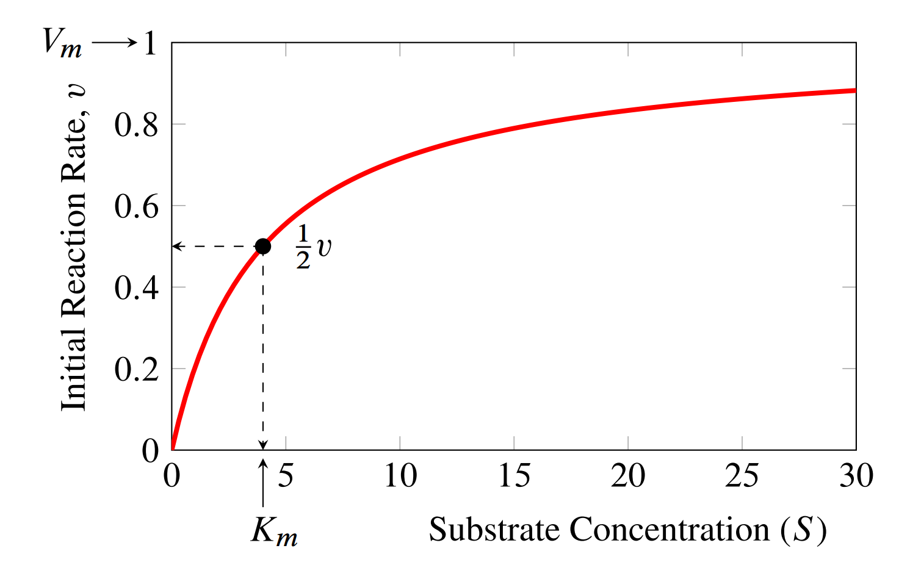
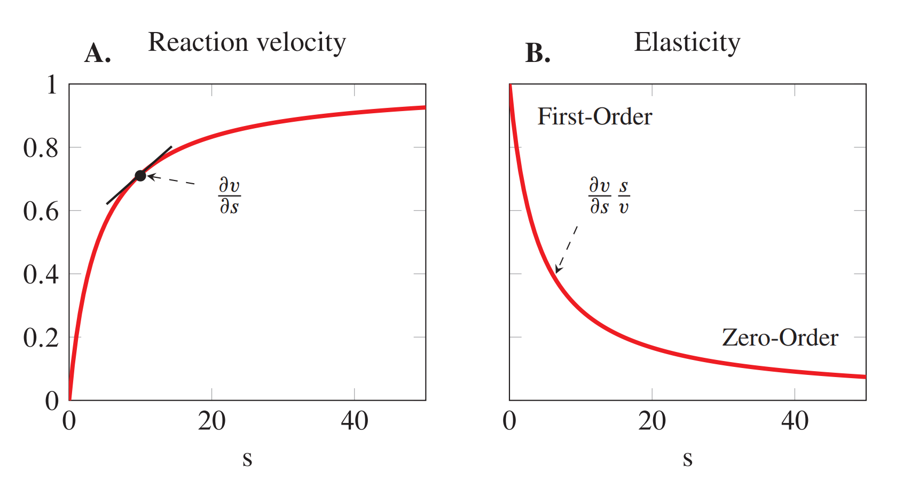

4.3. Elasticities#
Another way to study a biochemical pathway is to look at the individual enzyme catalyzed reaction steps. This has often been the domain of enzyme kineticists. For example, give the pathway shown below:
we could extract the enzyme in the second step and study it in isolation away from the rest of the pathway:
One way to study this reaction is to look at how the reaction rate \(v_2\) changes as a function of the substrate \(S_1\) and product \(S_2\). For example, we could change the substrate by an amount \(\delta s_1\) and observe the change in rate \(v_2\). This would given us an indication how much \(S_1\) influences the reaction rate. As before we can examine the relative change in reaction rate given a relative change in substrate. We can express this as follows:
We call this measure the elasticity coefficient. However changes in the product can also affect the reaction rate. This means there will also an elasticity for the product \(S_2\):
In fact, a chemical reaction will have as many elasticities as there are factors as might influence the reaction rate. For an enzyme catalyzed reaction, there are a number of elasticities to consider other than the substrate(s) and product(s) elasticities. The most important of these are:
Enzyme concentration
Allosteric regulators
If a reaction has multiple substrates and products, each of these will have assigned elasticity.
For example, the following BiUni enzyme catalyzed reaction which has two substrates and one product:
We will also assume it is catalyzed by an enzyme \(E\) and regulated by an allosteric regulator, \(R\). Given this information, this reaction will have five elasticities to describe its behavior:
More formally we define the elasticity as follows:
There are a couple of things to note about this definition. First we use partial derivatives to indicate that when we change a variable such as \(s_i\), we must keep all other potential variables constant.
A second point to make is that elasticities are dimensionless quantities.
Notice
Due to the scaling, the elasticity is a dimensionless quantity.
The third point is that elasticities can be interpreted as a ratio of relative changes. This can be illustrated with a simple example. Let’s say that given a reaction \(S_1 \rightarrow S_2\), we discover that the elasticity \(\varepsilon^v_{s_1}\) has a value of 3.0.
This can be interpreted as follows by rearranging the approximation on the right as follows:
Therefore, if we were to increase \(S_1\) by 5% we would be see, approximately, a 15% change in the reaction rate.
The result is only approximate because strictly speaking an elasticity is only defined for infinitesimal changes since it’s a derivative. However, as long as we make only modest changes then the approximation is reasonably good.
4.3.1. Elasticity of Mass-Action Reactions#
Let’s look at what the elasticities of a simple mass-action reaction might look like.
To keep things simple let’s consider the simplest rate law:
where \(k_1\) is the rate constant and \(s\) the concentration of reactant. This rate law could be used to model the simple reaction:
For now we will ignore any product formation by assuming the reaction is irreversible.
Our task is to find \(\varepsilon^v_s\). Given the definition above, one way is to obtain the derivative then scale by the reaction rate and concentration of \(s\).
The derivative is just:
to get the elasticity we then multiply by \(s\) and divide by \(v\):
but \(v = k_1 s\), hence:
We therefore conclude that the elasticity for an irreversible mass-action single reactant reaction is one. In other words, changes in the reactant concentration \(S\), yields a proportional change in the reaction rate.
Chemists are already familiar with this, because they would refer to the reaction as a first-order reaction. In fact, in chemistry, the value of the order of a chemical reaction is referred to as the kinetic order.
If a first-order reaction such as \(S \rightarrow\) gives an elasticity of 1, one about a dimerization reaction such as \(S + S \rightarrow\) ? A chemist would call this reaction a second-order reaction because the mass-action rate law for such reaction is often given as:
that is the reaction rate is a function of the square of the concentration. We can obtain the elasticity for this reaction in the same way we did above. The derivative however is now:
when we scale we get:
I think we can start to see a pattern as a second-order reaction gives an elasticity of two.
This is a general result in that the elasticity for an irreversible mass-action reaction of order \(n\), also has an elasticity equal to \(n\).
The elasticity can be seen as a more general way of describing the order of a reaction.
4.3.2. Elasticities of Reversible Mass-Action Reactions#
What about the elasticities for reversible mass-action reactions?
While the elasticities for irreversible reactions are straight forward, reversible reactions are a little bit more complicated.
Let’s consider the reversible reaction:
The mass-action rate for this is:
As before we can derive the two elasticities:
The equations are obviously more complicated but one noticeable difference is that the elasticity with respect to the product, \(S_2\) is negative.
What does a negative elasticity mean?
A negative elasticity means that increasing the product concentration will decrease the reaction rate. This is true of any elasticity that is negative. Given a modulator of a reaction, we can say that in general:
Positive elasticities mean: increases in the modulator increases the reaction rate
Negative elasticities mean: increases in the modulator decreases the reaction rate
Most reactions in a cell are catalyzed by enzymes. We should therefore consider what the elasticity of an enzyme catalyzed reaction might look like.
The simplest rate law for a enzyme catalyzed reaction is the irreversible Michaelis-Menten rate law. This isn’t a rate law one might use to describe a reaction inside a cell because most reactions in a cell are not irreversible. Instead, we’d use the reversible version. For now, we’ll consider the irreversible form as that is the easiest to understand. The equation is given by:
In this equation we have two constants, the \(V_m\) which represents the maximal rate the enzyme can catalyze the reaction and the \(K_m\), often called the Michaelis constant is inversely related to how responsive the reaction rate is to the substrate concentration. If we plot the reaction rate as a function of substrate, as shown below, this will be become clearer.
{kind=link}
The plot shows us that initially, the reaction rate appears to increase linearly as we increase the substrate concentration. However, as the substrate concentration increases, the rate of increase in the reaction rate slows now, ultimately reaching a plateau at the maximal rate. This is when the enzyme is becomes saturate with substrate so that there is no more free enzyme left to increase the rate further.
Another way to interpreted the \(K_m\) is that it is the concentration of substrate that gives half the maximal velocity. That means a high \(K_m\) means we need a high substrate concentration to reach half the maximal velocity.
The elasticity can be derived as before by differentiating the rate law and scaling. First, lets obtain the derivative:
next we multiply by \(s\) and divide by \(v\), this gives us, after some simplification, the following elasticity:
The substrate elasticity shows a range of values from zero at high substrate concentrations to one at low substrate concentrations. When the enzyme is near saturation it is naturally unresponsive to further changes in substrate concentration, hence the elasticity is near zero.
The reaction behaves as a zero-order reaction at this point. When the elasticity is close to one at low \(S\), the reaction behaves with first-order kinetics.
In addition, the reaction order changes depending on the substrate concentration.
It is interesting to note that when \(s = K_m\), the elasticity is equal to 0.5:
The plots below illustrate how the elasticity relates to the slow of the rate curve (A) and how the elasticity changes as a function of substrate concentration(B). In this case the plots were generated using a \(K_m = 4\) and \(V_m = 1\).
{kind=link}
We’re not going to say much at this point about the case when the enzyme catalyzed reaction is reversible. That discussed in the intermediate topics section.
However, it is true that for a reversible enzyme catalyzed reaction, the elasticity with respect to the product will be negative.
Substrate elasticity \(\varepsilon^v_s > 0\)
Product elasticity \(\varepsilon^v_p < 0\)